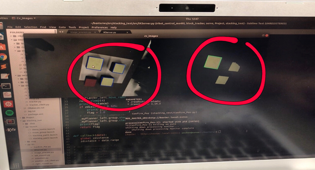

Yuchen Wang
Master of Science in Robotics|Northwestern University
B.S. in Computer Engineering|Rose-Hulman Institute of Technology
ResumeMaster of Science in Robotics|Northwestern University
B.S. in Computer Engineering|Rose-Hulman Institute of Technology
ResumeAs the daughter of a pilot, I have a passion on autonomous vehicle and drones. And I am always waiting for an opportunity of building the coolest robot and changing the world.
Graduating December 2019. Actively looking for 2020 full time job.
More InfoPython
ROS
C/C++
Linux
PX4
Machine Learning
Java
Embedded System
Android Development
Web Development
Motion Planning
Path Planning
Control System
Computer Vision
Sensor Fusion
Cooking
Workout
EDM
Climbing
Dancing
MSR Hackathon Project
Undergrad Course Project
Robot implements mapping, localization and navigation. It’s supposed to explore the 4x4 map and return to the origin location.
Wall following with side sonar sensors using PD-control.
Undergrad Course Project
Undergrad Senior Design

Undergrad Course Project
MSR Hackathon Project

Considering a domain D=[0,100]×[0,100], an initial configuration qinit=(50,50), and a stepsize Δq=1, used the Euclidean metric for evaluating distance. Then constructed the RRT plot.
Set the starting location at (10,10) and a goal location at (75,75). For the representation of the environment, assume all things can produce collision are easily represented as circular. This way, the collision checking can be performed analytically. To determine if a particular pair of vertices has a safe, collision-free path between them, determine if the line connecting the nodes has an intersection with any of the circles. The final path used by the RRT to go from the start state to the goal state is clearly highlighted.
MSR Course Project

The goal of this project is for Baxter to pick different blocks on the table by color and size, and stack them together.
The Baxter is able to recognize all the blocks on the table through image processing. The location, size and color information of the blocks will be passed to the robot and it will calculate the goal position of each movement. The robot arm picks up the largest block first and places it to a fixed position. Then it repeats the previous step by finding a smaller block and stack it on the previous one.
All the blocks were 3D printed, with different size ranging from 2"x2"x2" up to 3"x3"x2". The color of the blocks are either red or yellow.
Baxter's right hand camera has a decent resolution that works well in the project, so there is no need of using an external web cam. A node was written to process the raw image data basically using OpenCV library. When the user clicks on the camera image view and picks a color, the node would fetch the RGB value of the pixel being clicked and set a boundary range based on that value (in our case the boundary was ([B-30, G-30, R-30],[B+30, G+30, R+30])). All the contours that matches the RGB boundary would be detected and labeled. Then the contours will be sorted by area and listed from the largest to the smallest. The node will finally publish a topic containing the center coordinates of all the contours(sorted by area) in pixel value, and the angles that each contour tilted with respect to x-axis.
Baxter was programmed to begin at the same initial position each time. Then when list of blocks' positions reached, the robot arm would reach at a certain height over the block, and then the robot arm came down to pick the block. After that, the arm moved to the goal position to put down the blocks.
For the robot arm control, Cartesian Path Planner plugin in MoveIt was used to generate waypoints between beginning position and goal position. So that the robot arm won't move in unusual way and avoid hitting obstacles. And then, MoveIi planner was used to generate plan to make the arm move to the goal position along the waypoints.
During the trajection, the range sensor in the left hand was used to detect whether the block was attached to the baxter's left hand successfully or not. If the distance from left hand was less than 0.1m, the baxter will assume that the block was not picked successfully. Then in the next placement, the height of the block being placed will remain the same and also the baxter would came to the pick block again, which were not being picked successfully at last time.
MSR Machine Learning Project
This project uses machine learning to help diagnose different types of dermatology diseases, and the probabilty of making a definite diagnosis. The training data has more than 400 instances and each has 34 attributes. The output has six different values, each representing a specific type of dermatology disease.
Gradient descent, boosting and multiclass classification are the mainly used methods in this project. Boosting will return the top four important features for diagnosis. A GUI is provided to let user enter all attributes and return the most possible dermatology disease and the probability.

Individual Project

This main goal of this project is to simulate the behavior of an Iris quadcopter based on PX4 firmware in a Gazebo world. The quadcopter is supposed to accomplish an 3D motion planning. At first, the quad will be given a map containing all the obstacles and a destination point. It will use RRT algorithm to generate an optimized path to reach the goal and avoid collisions. The whole motion of the drone should be smooth, safe and robust.
Other than that, the quad could also be manipulated by hand-gesture to navigate in complex aerial space.
MAVROS is a ROS package which provides communication driver for various autopilots with MAVLink communication protocal. MAVROS can be used to communicate with any MAVLink enabled autopilot, and for this specific project it will be only used to enable communication between the PX4 flight stack and a ROS enabled companion computer.
ROS can be used with PX4 and the Gazebo simulator. As the picture below indicates, PX4 communicates with Gazebo to receive sensor data from the simulated world and send motor and actuator values. It communicates with the GCS and ROS to send telemetry from the simulated environment and receive commands.
Motion Planning
Since robots are able to follow trajectories based on kinematics, this project is to plan a trajectory for the end-effector of the youBot mobile manipulator (a mobile base with four mecanum wheels and a 5R robot arm), performs odometry as the chassis moves, and performs feedback control to drive the youBot to pick up a block at a specified location, carry it to a desired location, and put it down.
Given eight configurations indicating the relationship between end-effector, cube and world frame under different conditions, generate a reference trajectory for the gripper on frame {e}. The output is written to a cvs file containing 13 attributes: r11, r12, r13, r21, r22, r23, r31, r32, r33, px, py, pz, gripper state

Given the current configuration of youBot (Chassis phi, Chassis x, Chassis y, J1, J2, J3, J4, J5, W1, W2, W3, W4, Gripper), joints speed and wheel speed, return the next configuration of the robot after a short time dt(default as 0.01s).
The feedback control of the the mobile manipulator is given by kinematic task-space feedforward plus feedback control law:

Conversational AI using Attention Model
The main goal of this project is to implement a chit-chat bot using Transformer, which is a state-of-art model with Attention based on the paper from Google Brain, "Attention is All You Need".
Through the command line interface, a can run the eval.py script and then interact with the chatbot by typing in prompts directly on the command line. Based on the data on which the model is trained, an appropriate response will be constructed and printed at the command line.
One major part of this project is to collect and preprocess as much data as we could to feed into the model and improve the performance. There are several dataset source being used for this project: Cornell Movie Dialogs Corpus, Twitter Chat Corpus, Ubuntu Chat Dialogues and Reddit Comment Threads.
All these raw data are in different formats, size, and storage methods. In order to apply all of these data to one model, we have to pre-process them. NLTK and Regex have been the two mainly used tools for our data pre-processing.
Below is the result of an unsuccessful data-preprocessing, where the source data contains a lot of long-term complex words
With an attention mechanism we no longer try encode the full source sentence into a fixed-length vector. Rather, we allow the decoder to “attend” to different parts of the source sentence at each step of the output generation. Importantly, we let the model learn what to attend to based on the input sentence and what it has produced so far.
Using a pretrained model can expedite your chatbot experience. Twitter Corpus Trained model is a zip file with pretrained hyperparameters. Simply extract it and run evalcopy.py could launch the interface of the chatbot.
Course Project

The main idea of this project is to perform real time embedded control for an autonomous electromechanical system.
Assemble a quadrotor from commodity parts including IMU, RaspberryPi, PWM board, chassis and motors. Below is the picture of the quadrotor.

Create the software for controlling quadrotor in both high and low level.
First of all I calibrated IMU to reset the aircraft principle axes, added PID controller for pitch, roll and yaw, as well as the joystick thrust. And then finely tuned the gains so that the quad could fly smoothly without oscillation. The quad could be manipulated easily and stably by joystick commands. Here is the example of joystick control flight.

The quad will receive IR light transmitted by HTC Vive Lighthouse, which could return the current X, Y, Z and theta value of the quad. I calibrated and filtered the vive sensor data to reduce noise first. Then added higher level PID controller to the offset of current coordinate above the original lower level Pitch-Roll-Yaw-Thrust controller. Finely tuned the gains to make sure the quad could hold its position at a fixed location. (Shown in the GIF at top)
Course Project
The main goal of the project is to animate the movement of a triangle (or a square) bouncing freely in an enclosure space with several obstacles. The idea comes from the classic pinball game.
The final system consists of two steady blocks and one rotating bar shown below. There are total of 16 impact conditions in the whole system, four for the boundary walls, eight for each side of the blocks, and four for the vertex hitting the rotating bar. There are three configuration variables: x[t], y[t] representing the location of the center of the ball, and θ[t] as the rotation angle of the ball.
The Euler-Lagrange Equation is:

In Mathematica, the system will keep track of the position and angle of the square “ball”. Whenever the vertical dimension from the center of the ball to its edge (in this case equals to l * √2 * cos[π/4 − ɑ[t]]) equals to the distance from the center of the ball to the steady impact surface, the ball would bounce against the surface. For the rotating bar, I consider it as a rotating body frame. If the body frame coordinate of any of the four vertices overlaps with the bar, the ball will also bounce back. All the impacts in this system are elastic.